"DEMOSTRACIÓN DE LOS COMANDOS"
Como primer paso se crea una nueva carpeta que es donde se guardara el archivo que se utilizara y se manda a traer en el editor que se quiera utilizar en este caso es Sublime text.
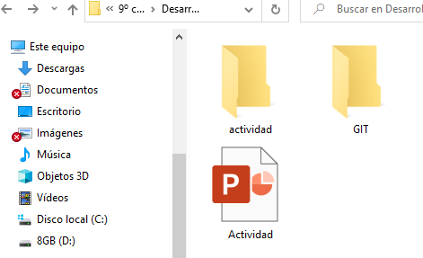
En sublime text se crea el archivo index.html y se guarda en la carpeta
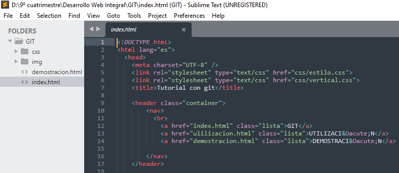
Ingresamos a la consola y nos redirigimos a la ruta donde esta la carpeta o también colocando el cursor en la ruta donde esta guardada y colocar cmd. Después utilizamos el comando git init el cual se utiliza una sola vez durante la configuración inicial de un proyecto nuevo.
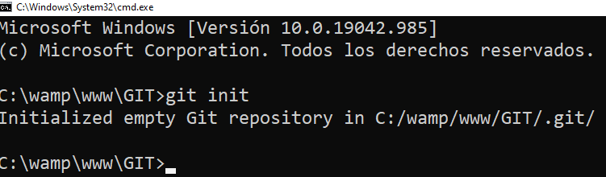
Ingresamos el comando git status para que nos muestre el estado del directorio de trabajo (proyecto), también nos permite ver los cambios que se han realizado, los que no y los archivos que se tienen en la carpeta. El archivo de index.html esta en color rojo por que aún no se a agregado.
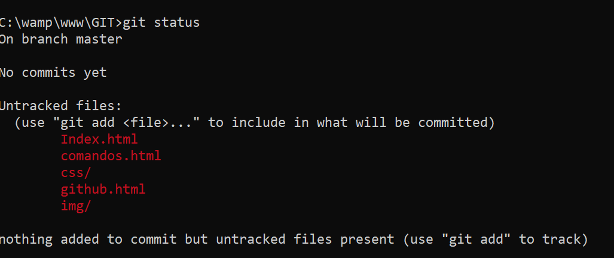
Se inserta el comando git add con el nombre del archivo, para agregar y indicar a Git que se quiere incluir actualizaciones en el archivo o tambien se puede utilizar el comando git add .. Para ver el cambio se inserta de nuevo el comando git status.
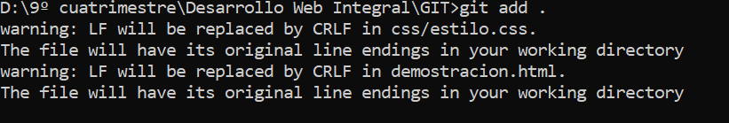
Al ejecutar comando git commit se guardaran los cambios de la nueva version la cual se almacenara en el directorio git. con git log se pueden ver las versiones guardadas
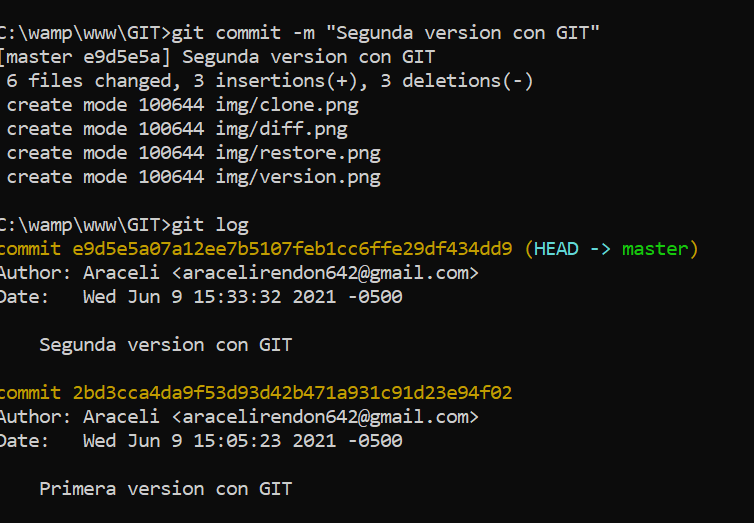
Se configura el nombre de usuario y dirección de correo electrónico, con el comando git config --global user.name y git config --global user.email.
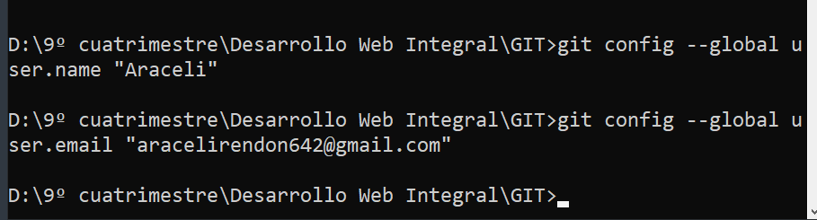
El comando git diff nos indicara los cambios que has hecho pero que aun no has preparado o las líneas exactas que fueron añadidas y eliminadas.
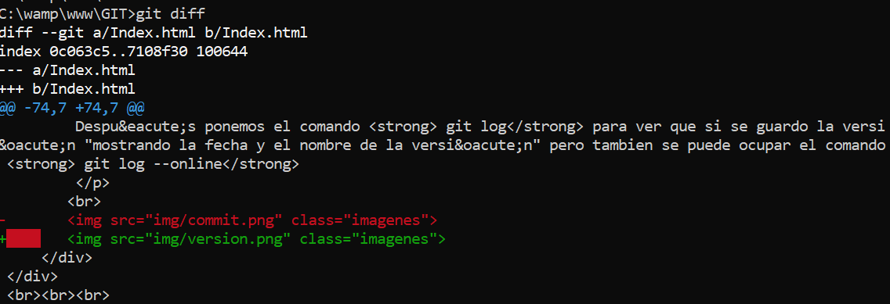
Insertamo git checkout para cambiarnos de una rama a otra. Lo utilizaremos de la siguiente manera: git checkout --nombre-de-la-rama.
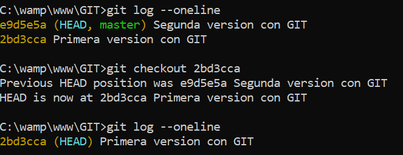
El comando git restore lo utilizaremos para restaurar archivos en el índice desde otro commit.
Con el comando git branch crearemos una rama nueva
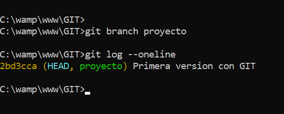
El comando git fetch se ejecutara para recuperar la última información de los metadatos del original
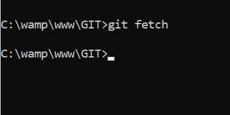
El comando git merge fusionará cualquier cambio que se haya hecho en la base de código en una rama separada de tu rama actual como un nuevo commit.
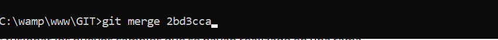
Después de haber confirmado los cambios, debemos enviar los commits al repositorio remoto para eso utilizamos el comando git push.
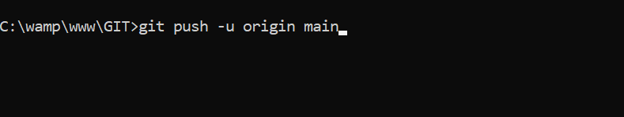
Ejecutamos el comando git pull para recibir las actualizaciones del repositorio remoto.
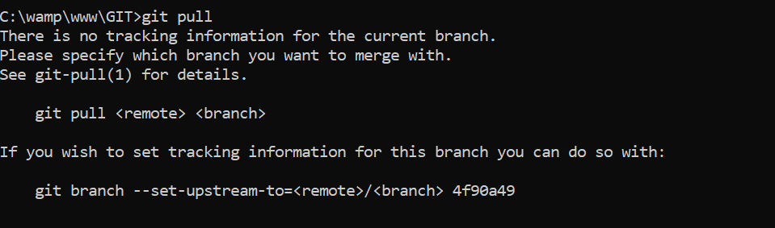
El comando git rm se utiliza para eliminar archivos del index y del directorio de trabajo.
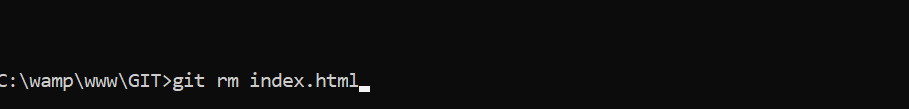
Al ejecutar el comando git Switch nos permitirá cambiar a otra rama.
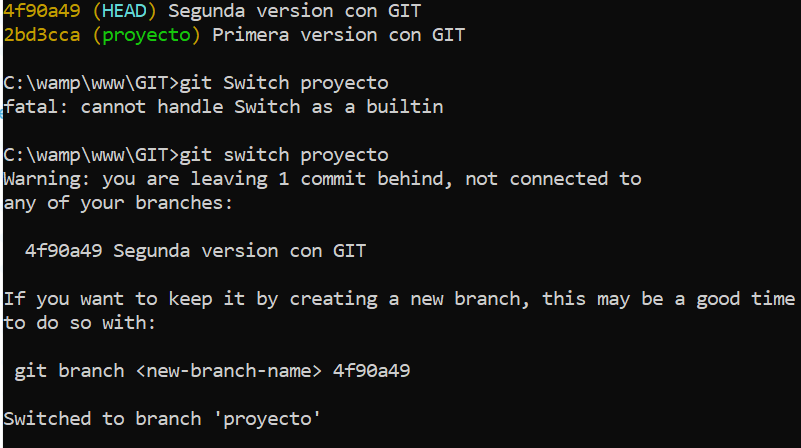
Ponemos git clone para realizar una copia idéntica de la última versión del proyecto y la guarda en el ordenador.
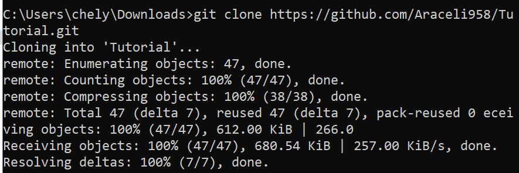